|
 previous / next column previous / next column
A PHYSICIST WRITES . . .
(May 2010)
As you read this [in the Thames Valley Group Newsletter] Mrs S and I have, I hope, just returned from a week in the South of France, staying with my sister and husband who live close to the Pyrenees. As I write this, before packing to depart, I am trying to banish thoughts of the Icelandic volcano (which could disrupt flights again) and recall instead the mountains down south. And they in turn are making me think - rather loosely - about what you might see when you are gazing at hills anywhere.
Your two eyes (if I can assume they are working well) capture tiny, slightly shifted images of the scene in front of you. These are merged by an astonishing feat of brain-work into a clear 3D view, in which things appear to you not only solid but also at definite distances (see my July 2003 column for more on this).
But because your eyes are only about 6 cm apart, stereo vision can only operate like this up to a distance of around 100 metres from you. So everything further off ought to look flat, as if it was painted on a backdrop. Yet very often it doesn't: you find you can tell the relative distances of further objects fairly easily. How is this so? It's that clever brain again, taking in clues such as the light and shade on things, their apparent size, and how they fit into the perspective of the scene.
As for mountains, even if they are far off you are usually able to work out their relative placing, from the details visible on nearer hills, or the mistiness and blueness of further ones, or simply the fact that one silhouetted slope is overlapping another, hence it must be closer. But even so, hills and mountains mostly can't and don't really appear 'solid'.
There's a motoring connection coming! First, you're probably aware that if you lean from side to side, you can judge the distances of things quite easily when they are a lot more than 100 metres away, from how much they move to and fro in front of the background scenery - the technical name for this effect is parallax. What you are doing of course is using points of view that are further apart than your eyes are.
Now let me magnify the parallax hugely by driving you past some hills: looking to the side as we build up speed, you can see the nearer slopes apparently moving past faster than the further ones. And as a result you should find you are actually able to visualize some of the hills now as distant solid objects. I always enjoy this experience, especially down among the Pyrenees. Alas, you can't do so if you're the driver!
Thinking about hills reminds me also of the first (and possibly finest) walking holiday that Mrs S and I went on, nine years ago, following winding footpaths while our luggage was transported for us. This too was in the South of France, and some of the stopping-points were bastides: medieval fortified hill-top villages.
The average daily trek was only about ten miles, but each one felt as ambitious and rewarding as a day's driving would have been, anywhere. On our first day of progress, the bastide we had left kept coming into view again between other lesser hills (sometimes behind us, sometimes on the left or right), as if repeating an au revoir. But nothing compared with seeing the village of Cordes sur Ciel, as we rounded a slope. Some lucky photographers have caught it rising up out of surrounding mist. But even without this it took our breath away ... as did the final climb up to it!
And thinking about walking reminds me that I notice a curious difference between journeys on foot and by car: after any long walk, I can recall all its twists and turns and features for days (and some of them for much longer). But after a drive, much less detail seems to stay in the mind, even if the route was a familiar one.
Is this because of the higher speed, or do the mental activities involved in driving somehow block the storing of unnecessary memories? And yet (as I've asked here before) how is it that if I listen to a R4 programme while on a regular drive, and then later I catch a repeat of it, the words immediately cause me to remember each stretch of road where I heard them first? Evidently I do make a subconscious mental record of the journey.
On holiday I naturally take photos to reinforce the memories, and indeed I've been an 'amateur snapper' for the best part of 50 years. But here's a strange thing: I've long known about stereoscopic still-photography too: first a pair of pictures is captured matching what your two eyes would see; one way of then viewing them is to have them printed side by side, and to look at them (usually) with a special viewer which will show the correct photo to each eye. Yet it's never occurred to me to step outside and try taking a simple stereo-pair myself - until just now. Here's the result:
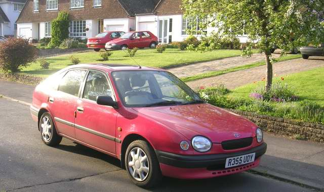 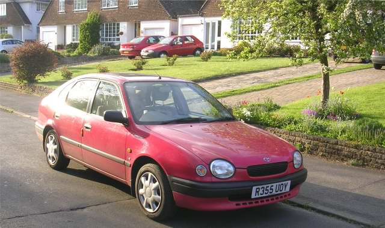
[Just for the record, nearly all of what follows was not included in the original newsletter column.]
It may not work for everyone, but here's how to view my Corolla (not to mention several gardens) in 3D: hold your face close to the screen with a car in front of each eye, relax both eyes, and then lean away slowly back to reading distance. If you have managed to keep the left eye focused on the left photo, and the right on the right, you should be aware of three pictures - the centre one being stereoscopic. This isn't my cleverness but your brain's, as it works on the images, like I said at the start (though it might take the eyes and brain a few seconds fully to lock into the solidity of the picture).
I'm assuming, by the way, that your PC monitor is displaying each photo about 6 cm wide. If they are larger/smaller, it will help if you reduce/enlarge them: holding the CTRL key down and pressing - or + should do the trick (if you want to be sure of resetting the display exactly afterwards, click Page or View, then Zoom).
Now this is only one method of viewing stereo-pairs - and as you may realize, the restriction is that each photo can't be bigger across than the distance between your eyes, which limits the amount of detail that it's possible see in them. Using a hand-held stereo viewer (effectively a pair of magnifying glasses) would increase the detail, and some types of viewer allow you to view larger pictures too.
But my own preferred way of seeing more detail in 3D pictures is to swap them over, enlarge them and view them 'crossways', ie, by squinting. I can do this without difficulty, but for many people it is harder to achieve. Have a go with the Corollas:
Sit back and focus your eyes on a finger held up in front of the pictures, and then keep both eyes firmly on it while you move it slowly just over halfway towards your nose: the two pictures should merge behind like the previous pair did, except that the left eye is now actually looking at the right picture and vice versa. If you have success with this, you could then try zooming in (CTRL and +) for even better clarity.
I can report now that Mrs S and I travelled by air to the S of France and back on schedule: the Icelandic volcano calmed down just in time. And I managed to capture some stunning stereo photos (stunning to my eye, anyway)! I discovered that it's not so easy to capture the full scene in 3D when it contains both near and distant objects, because if you take the pictures so as to show nearer things in realistic stereo, then hills in the distance inevitably appear as flat background. But this is a minor drawback.
The images are set out below (starting with views of the Pyrenees) in two blocks: smaller for easy 'parallel' viewing, like the first pair of Corollas were above, and then larger and swapped over for crossways viewing as I've just described (and if this works for you, don't forget to zoom in on the pictures too). I hope you will be able to appreciate the solidness as vividly as I can.
Finally, if you have managed to see these pictures in 3D, you might enjoy following up something else I've tried: a Google-images search for "stereo pairs" (click here). Of the huge number of results, some are arranged for parallel viewing and some for crossways. (If you happen to view any stereo pair by the wrong method, the 3D effect will seem to be back to front, or at least not solid.)
Peter Soul
Parallel pairs (put face close to screen, then lean back):
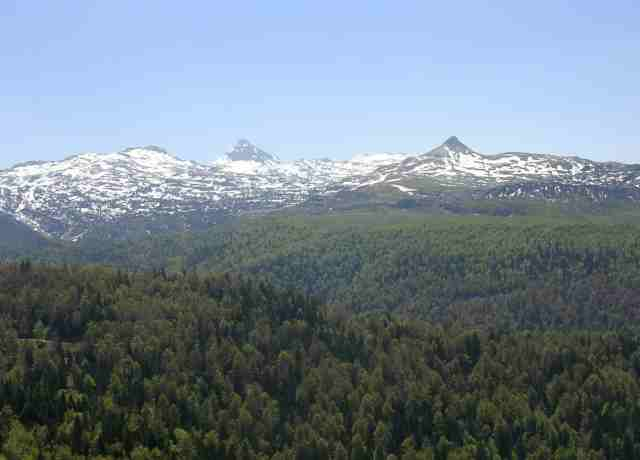 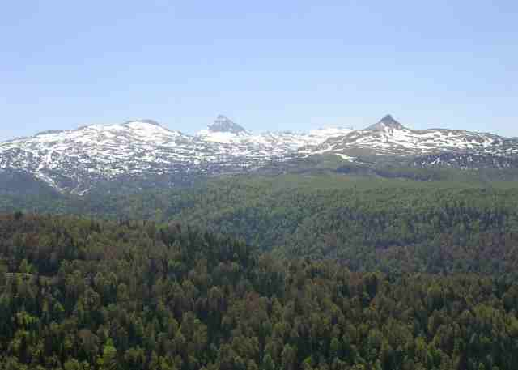
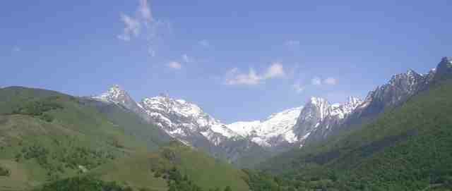 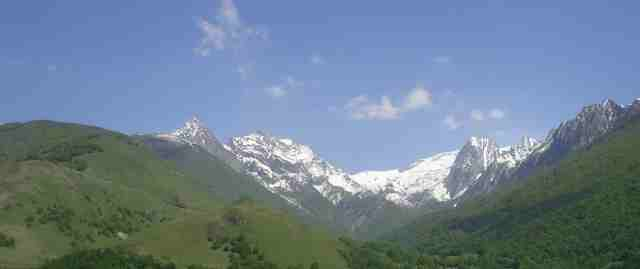
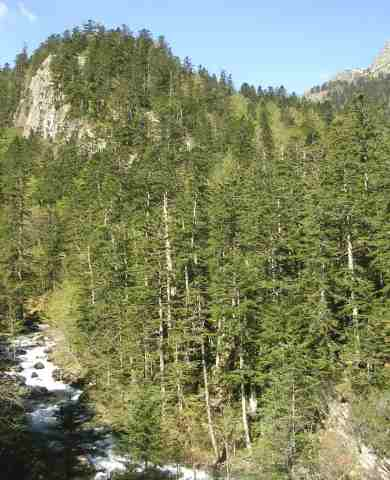 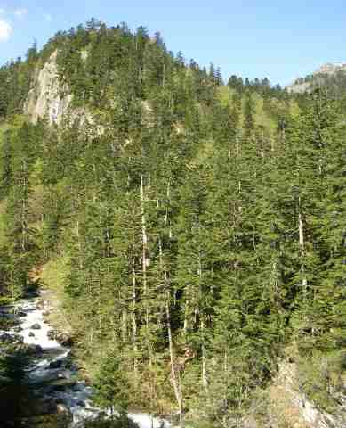
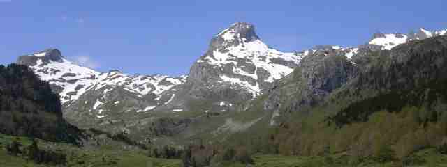 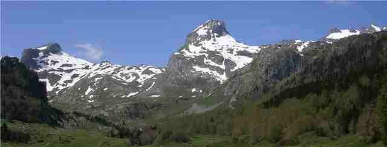
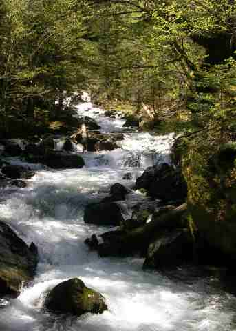 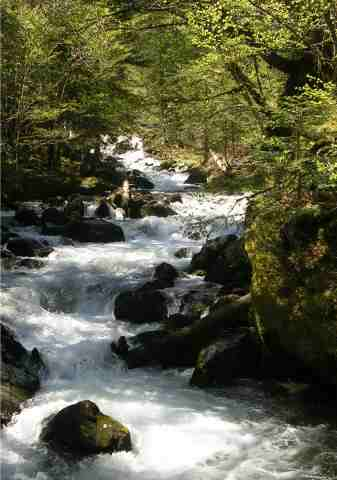
Views of the town of Oloron, close to Pau and the Pyrenees:
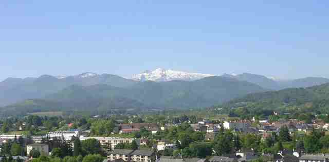 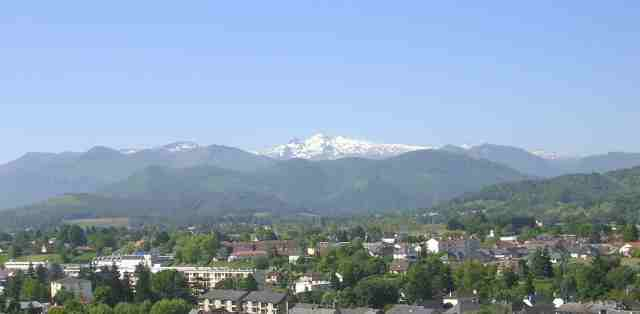
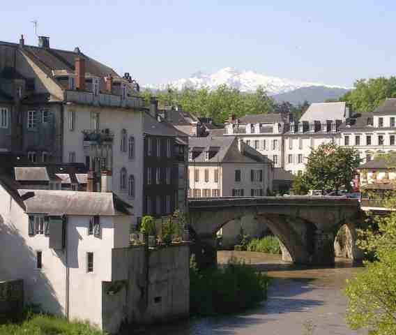 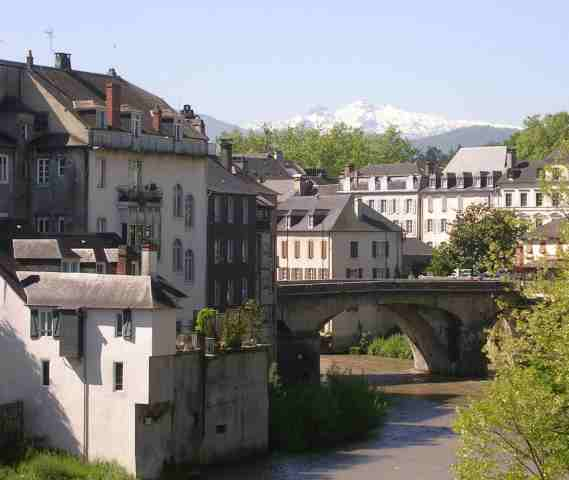
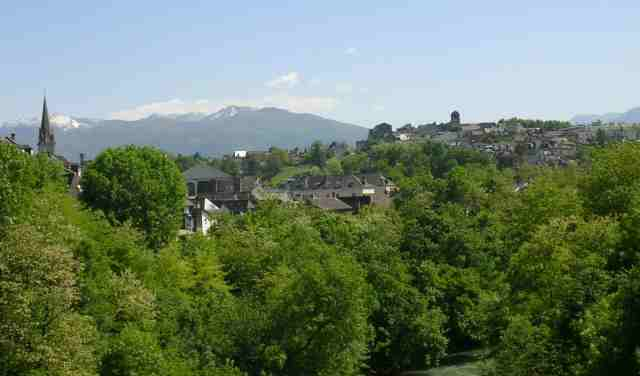 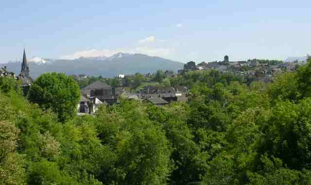
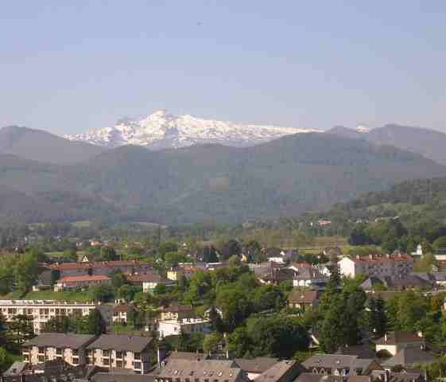 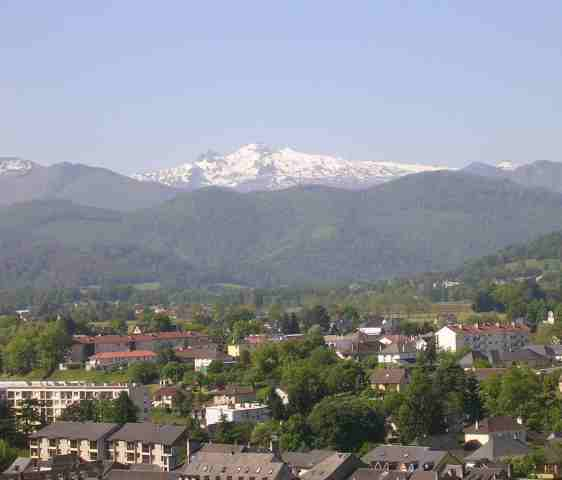
Pic du Midi d'Ossau, from a lake two miles away (the Spanish border is the same distance beyond the peaks):
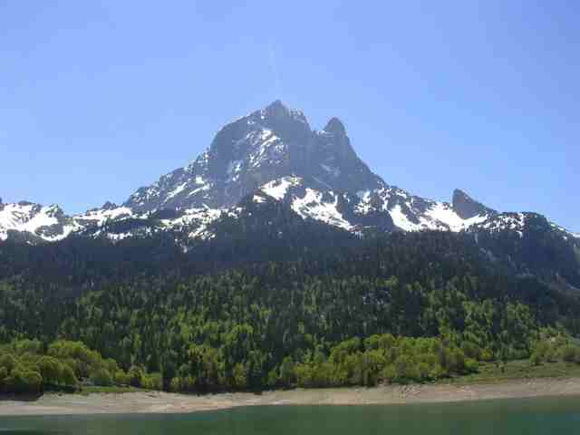 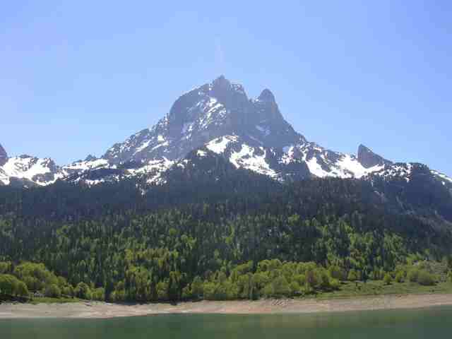
The 12C church of L'Hpital-Saint-Blaise, a stopping-place on one of the pilgrimage routes to Santiago de Compostela (if you can see an odd-looking pattern on the roof, it is interference between the actual tile pattern and the pixels on the screen):
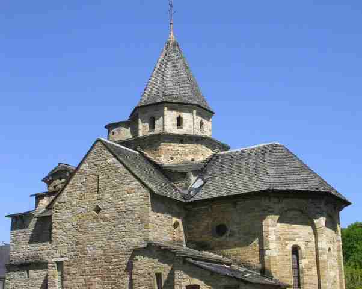 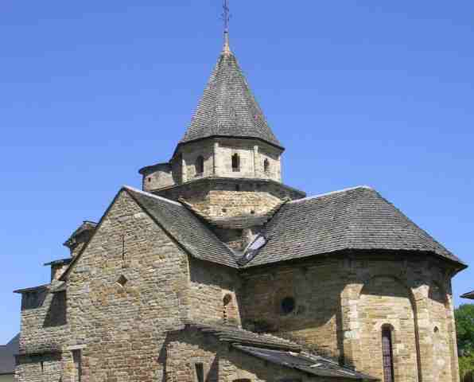
Crossed pairs (put finger close to screen, then bring it back):
previous / next column
|